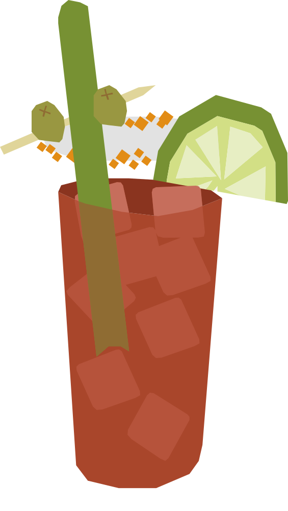

¿Un coctél de espaghetti?
Inventado en 1969 por el bartender Walter Chell en el Calgary Inn de Alberta, quien quería recrear el sabor de los spaghetti alle vongole en forma líquida. Se volvió tan popular que Calgary organizó una petición nacional para declararlo el cóctel oficial de Canadá..
RECETA
- 45 ml vodka
- 120 ml jugo de Clamato
- 15 ml jugo de limón
- 2–3 gotas de salsa Worcestershire
- 2–3 gotas de salsa picante
- Sal de apio
- Pimienta negra
- Hielo
- 1 vara de apio
- 2-3 aceitunas verdes
- 1 rebanada de limón
- Escarcha el borde del vaso con jugo de limón y sal de apio.
- Llena el vaso con hielo.
- Agrega el vodka, Clamato, jugo de limón, Worcestershire y salsa picante.
- Mezcla suavemente.
- Decora con la vara de apio, aceitunas y rebanada de limón.
Vaso: Vaso alto (Highball)